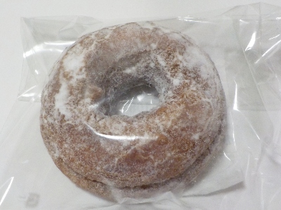
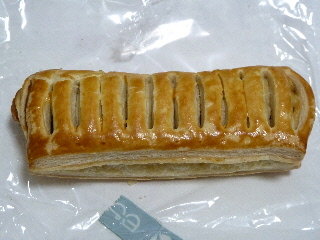
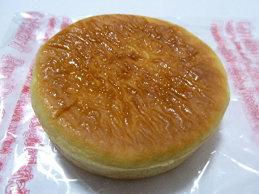
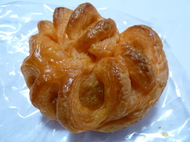
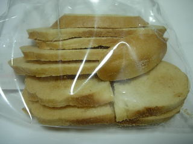
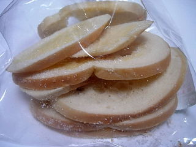
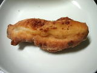
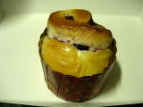

ラピタはまやま店のプレーンケーキドーナッツ。
2024/07/07

税込み108円です。見た目がとっても美味しそうだったので買いました。
見た感じはちょっと硬そうですが、中はホットケーキミックスっぽい感じでふわふわ感がありました。商品名にある「プレーンケーキ」とはこんな感じのことなのかな。
お皿に乗せてお客さんに出したらカッコよさそうです。
島根県出雲市松寄下町298-2
2024/07/07

税込み108円です。見た目がとっても美味しそうだったので買いました。
見た感じはちょっと硬そうですが、中はホットケーキミックスっぽい感じでふわふわ感がありました。商品名にある「プレーンケーキ」とはこんな感じのことなのかな。
お皿に乗せてお客さんに出したらカッコよさそうです。
2015/01/13
レーズンのパイってあるんですね。

ガッチリとパイ生地があるんですけど、レーズンの味が強いのでいいバランスの味でした。
レーズンとチーズの組み合わせは美味しくていいですね。
2013/12/16
クリームチーズが入ったパンですね。

商品名にあるように、とろける感じのチーズが入ったパンでした。
とっても甘いクリームだったので、クリームパン気分でいただきました。
2013/12/16
凝った形のパンですね。

外側がデニッシュ風で、中は普通のパンでした。
かぼちゃあんは濃い味じゃないので、食べやすかったです。
マイルドな感じでした。
2009/9/19
ベーグルのラスクですね。

サクサクとしていで、軽い歯ごたえが良かったです。プレーンタイプなのでベーグルの味そのままなんですが、おぜんべいとが麩菓子っぽい味がして面白い味だなと思いました。
シュガータイプも売ってたんですが、こっちは砂糖が付いている分サクサク感が落ちますね。

2008/5/17
カレーパンの中身がカレーじゃなくて、エビチリソースが入ったパンでした。
エビがどーんと入っているといいんですが、なかなか値段的にもそうゆうわけにはいかないですね。
カレーとエビチリじゃあ味が全然違いますが、ピリ唐な感じが似ているので、中身が違ってもそんなに違和感なかったです。きっとピザソースでもOKなんだろうなって思いました。
カレーパンはカレーが一番いいとは思いますが、たまに違う味が入っているのもいいなって思いました。
2008/1/21
チーズ味のパンって言うより、チーズ風味のドーナッツな気分がしました。
「もちっこ」って名前なので、中はモチモチした食感なんですけど、原材料にもち粉が入ってました。（小麦粉も使用）
スナック菓子みたいに、表面に甘辛い味が付いているので食欲をそそりました。

3本が袋に入って200円でした。
2008/1/2
スパー内のパン屋さんです。パン屋内蔵の流行タイプのスーパーですね。
ロールパンなんですけど、カップに入っててマフィンっぽいパンです。面白いですね。

パン自体の味は食パンっぽくて、よけいな味のないシンプルな味でした。変に味が付いてないので、ジャムとの相性が良く美味しかったです。
ジャムが多く入ってて甘いですし、見た目もお洒落なので、お菓子パンとしていい商品だなって思いました。